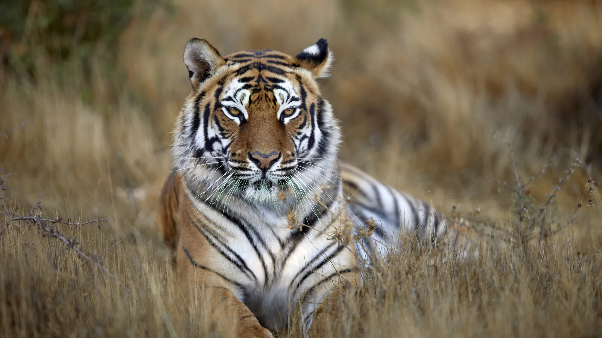

El tigre es el felino más grande del mundo y uno de los superdepredadores más icónicos del planeta, con machos que pueden llegar a pesar hasta 300 kg y medir más de 3 metros de longitud según la subespecie, mientras que las hembras son notablemente más pequeñas. Su rasgo más distintivo es su pelaje de un tono naranja intenso interrumpido por un patrón único de rayas negras verticales, el cual funciona como una huella dactilar individual y le otorga un camuflaje perfecto para acechar entre la vegetación densa. Posee una fuerza física descomunal, garras retráctiles largas y colmillos muy potentes diseñados para derribar a grandes presas como ciervos, jabalíes y búfalos de agua. A diferencia de la mayoría de los gatos domésticos y de otros felinos, es un excelente nadador que disfruta del agua para refrescarse y perseguir presas. Es un animal estrictamente solitario y muy territorial que caza principalmente durante el crepúsculo y la noche, y su hábitat natural abarca desde las densas selvas tropicales y manglares de Asia hasta los fríos bosques templados y taigas del extremo oriente ruso.